네트워크관리사-2급 (2021-02-28 기출문제)
1과목: TCP/IP
1. 패킷이 라우팅 되는 경로의 추적에 사용되는 유틸리티로, 목적지 경로까지 각 경유지의 응답속도를 확인할 수 있는 것은?
- ipconfig
- route
- tracert
- netstat
(정답률: 87%)

2. C Class 네트워크에서 6개의 서브넷이 필요하다고 할 때 가장 적당한 서브넷 마스크는?
- 255.255.255.0
- 255.255.255.192
- 255.255.255.224
- 255.255.255.240
(정답률: 80%)
3. ARP에 대한 설명으로 올바른 것은?
- IP Address를 장치의 하드웨어 주소로 매핑하는 기능을 제공한다.
- Dynamic으로 설정된 내용을 Static 상태로 변경하는 ARP 명령어 옵션은 '-d'이다.
- ARP가 IP Address를 알기 위해 특정 호스트에게 메시지를 전송하고 이에 대한 응답을 기다린다.
- ARP Cache는 IP Address를 도메인(Domain) 주소로 매핑한 모든 정보를 유지하고 있다.
(정답률: 84%)
4. 프로토콜과 일반적으로 사용되는 포트번호(Well-Known Port)의 연결이 옳지 않은 것은?
- FTP : 21번
- Telnet : 23번
- HTTP : 180번
- SMTP : 25번
(정답률: 90%)
5. DNS 레코드에 대한 설명으로 옳지 않은 것은?
- A : DNS 이름과 호스트의 IP Address를 연결한다.
- CNAME : 이미 지정된 이름에 대한 별칭 도메인이다.
- AAAA : 해당 도메인의 주 DNS 서버에 이름을 할당하고 데이터를 얼마나 오래 캐시에 저장할 수 있는지 지정한다.
- MX : 지정된 DNS 이름의 메일 교환 호스트에 메일 라우팅을 제공한다.
(정답률: 76%)
6. RIP(Routing Information Protocol)의 특징에 대한 설명으로 올바른 것은?
- 서브넷 주소를 인식하여 정보를 처리할 수 있다.
- 링크 상태 알고리즘을 사용하므로, 링크 상태에 대한 변화가 빠르다.
- 메트릭으로 유일하게 Hop Count만을 고려한다.
- 대규모 네트워크에서 주로 사용되며, 기본 라우팅 업데이트 주기는 1초이다.
(정답률: 80%)
7. TCP 헤더에는 수신측 버퍼의 크기에 맞춰 송신측에서 데이터의 크기를 적절하게 조절할 수 있게 해주는 필드가 있다. 이 필드를 이용한 흐름 제어 기법은?
- Sliding Window
- Stop and Wait
- Xon/Xoff
- CTS/RTS
(정답률: 88%)
8. ICMP 메시지 내용으로 옳지 않은 것은?
- 호스트의 IP Address가 중복된 경우
- 목적지까지 데이터를 보낼 수 없는 경우
- 데이터의 TTL 필드 값이 ′0′이 되어 데이터를 삭제 할 경우
- 데이터의 헤더 값에 오류를 발견한 경우
(정답률: 62%)
9. IGMP에 대한 설명으로 올바른 것은?
- 다중 전송을 위한 프로토콜이다.
- 네트워크 간의 IP 정보를 물리적 주소로 매핑한다.
- 하나의 메시지는 하나의 호스트에 전송된다.
- TTL(Time To Live)이 제공되지 않는다.
(정답률: 82%)
10. 네트워크 장비를 관리 감시하기 위한 목적으로 TCP/IP 상에 정의된 응용 계층의 프로토콜로, 네트워크 관리자가 네트워크 성능을 관리하고 네트워크 문제점을 찾아 수정하는데 도움을 주는 것은?
- IGP
- RIP
- ARP
- SNMP
(정답률: 81%)
11. IP Address ′127.0.0.1′ 이 의미하는 것은?
- 모든 네트워크를 의미한다.
- 사설 IP Address를 의미한다.
- 특정한 네트워크의 모든 노드를 의미한다.
- 루프 백 테스트용이다.
(정답률: 87%)
12. IPv6의 주소 표기법으로 올바른 것은?
- 192.168.1.30
- 3ffe:1900:4545:0003:0200:f8ff:ffff:11⑤
- 00:A0:C3:4B:21:33
- 0000:002A:0080:c703:3c75
(정답률: 88%)
13. 네트워크 및 서버관리자 Kim은 총무과 Lee로부터 계속하여 IP가 충돌하여 업무에 지장이 많은 것을 민원으로 접수하게 되었다. 확인결과 사내에서 Lee와 동일한 IP(192.168.1.100)가 입력되어 있는 SUMA-COM2라는 PC가 Lee의 PC와 IP 충돌을 일으키고 있는 것을 확인하게 되었다. 해당 IP의 이름을 확인할 수 있는 (A) 명령어는? (단. 윈도우 계열의 명령프롬프트에서 실행하였다.)
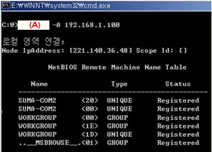
- nslookup
- netstat
- arp
- nbtstat
(정답률: 53%)
14. 높은 신뢰도나 제어용 메시지를 필요로 하지 않고, 비연결형 서비스에 사용되는 프로토콜은 무엇인가?
- UDP
- TCP
- ARP
- ICMP
(정답률: 86%)
15. TCP/IP 프로토콜의 응용계층에서 제공하는 응용서비스 프로토콜로 컴퓨터 사용자들 사이에 전자우편 교환 서비스를 제공하는 것은?
- SNMP
- SMTP
- VT
- FTP
(정답률: 88%)
16. 원격에 있는 호스트 접속시 암호화된 패스워드를 이용하여 보다 안전하게 접속할 수 있도록 rlogin과 같은 프로토콜을 보완하여 만든 프로토콜은?
- SSH
- SNMP
- SSL
- Telnet
(정답률: 81%)
17. OSPF 프로토콜이 최단경로 탐색에 사용하는 기본 알고리즘은?
- Bellman-Ford 알고리즘
- Dijkstra 알고리즘
- 거리 벡터 라우팅 알고리즘
- Floyd-Warshall 알고리즘
(정답률: 66%)
2과목: 네트워크 일반
18. 에러제어 기법 중 자동 재전송 기법으로 옳지 않은 것은?
- Stop and Wait ARQ
- Go-Back N ARQ
- 전진에러 수정(FEC)
- Selective Repeat ARQ
(정답률: 83%)
19. TCP/IP 프로토콜 계층 구조에서 전송 계층의 데이터 단위는?
- Segment
- Frame
- Datagram
- User Data
(정답률: 79%)
20. 인터넷 프로토콜들 중 OSI 참조 모델의 네트워크 계층에 속하지 않는 프로토콜은?
- IP
- ICMP
- UDP
- ARP
(정답률: 77%)
21. (A) 안에 맞는 용어로 옳은 것은?
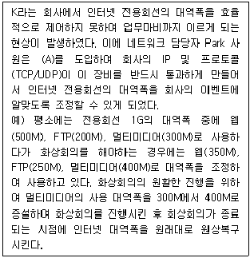
- QoS (Quality of Service)
- F/W (Fire Wall)
- IPS (intrusion prevention system)
- IDS ( Intrusion Detection System)
(정답률: 81%)
22. 전송효율을 최대로 하기 위해 프레임의 길이를 동적으로 변경시킬 수 있는 ARQ(Automatic Repeat Request)방식은?
- Adaptive ARQ
- Go back-N ARQ
- Selective-Repeat ARQ
- Stop and Wait ARQ
(정답률: 73%)
23. 다음에서 설명하는 전송매체는?
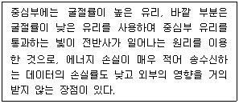
- Coaxial Cable
- Twisted Pair
- Thin Cable
- Optical Fiber
(정답률: 88%)
24. 센서 네트워크에서 센서 노드들의 센싱 데이터를 수집하는 노드는?
- Sink
- Actuator
- RFID
- Access Point
(정답률: 67%)
25. 클라우드 컴퓨팅의 서비스들 중 하나의 유형으로서 웹 브라우저를 통하여 소프트웨어를 제공하며, 서비스의 대상자는 주로 일반 소프트웨어 사용자인 것은?
- SaaS
- PaaS
- IaaS
- BPaas
(정답률: 72%)
26. VPN에 대한 설명으로 (A)에 알맞은 용어는?
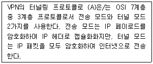
- PPTP
- L2TP
- IPSec
- SSL
(정답률: 62%)
27. 다음의 (A)에 들어갈 알맞은 용어는 무엇인가?
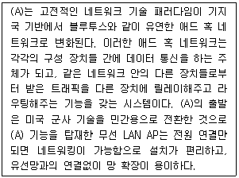
- Wireless sensor networks
- Wireless mesh networks
- Software defined networks
- Content delivery networks
(정답률: 77%)
3과목: NOS
28. Linux 시스템에서 사용되고 있는 메모리양과 사용 가능한 메모리 양, 공유 메모리와 가상 메모리에 대한 정보를 볼 수 있는 명령어는?
- mem
- free
- du
- cat
(정답률: 74%)
29. 다음의 내용이 설명하고 있는 Linux 시스템 디렉터리는 무엇인가?
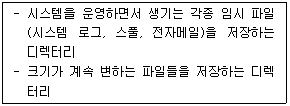
- /home
- /usr
- /var
- /tmp
(정답률: 63%)
30. Linux 프로세스를 확인하는 명령어로 올바른 것은?
- ps -ef
- ls -ali
- ngrep
- cat
(정답률: 83%)
31. 다음은 Linux 시스템의 계정정보가 담긴 ′/etc/passwd′ 의 내용이다. 다음의 설명 중 옳지 않은 것은?
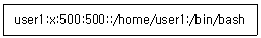
- 사용자 계정의 ID는 ′user1′ 이다.
- 패스워드는 ′x′ 이다.
- 사용자의 UID와 GID는 500번이다.
- 사용자의 기본 Shell은 ′/bin/bash′ 이다.
(정답률: 85%)
32. 서버 담당자 Park 사원은 Windows Server 2016에서 사용자 및 그룹을 관리하는 업무를 부여받았다. Windows Server 2016에는 기본적으로 3개의 로컬 사용자 계정이 생성되어 있는데, 다음 중 기본적으로 생성되는 계정이 아닌 것은?
- Administrator
- DefaultAccount
- Guest
- root
(정답률: 77%)
33. 서버 담당자 Park 사원은 Windows Server 2016에서 성능 모니터를 실행하여 서버의 성능을 분석하고자 한다. 성능 모니터에 있는 리소스 모니터는 시스템 리소스가 어떻게 사용되고 있는지를 보여주는 또 하나의 강력한 도구이다. 이 유틸리티를 사용하면 소프트웨어 업데이트 및 설치에 대한 정보를 볼 수 있으며, 또한 발생한 주요 이벤트와 해당 이벤트가 발생한 날짜를 볼 수 있다. 리소스 모니터에서 점검할 수 있는 항목이 아닌 것은?
- CPU
- Memory
- Network
- Firewall
(정답률: 76%)
34. Windows Server 2016의 DNS Server 역할에서 지원하는 ′역방향 조회′에 대한 설명으로 옳은 것은?
- 클라이언트가 정규화 된 도메인 이름을 제공하면 IP주소를 반환하는 것
- 클라이언트가 IP주소를 제공하면 도메인을 반환하는 것
- 클라이언트가 도메인을 제공하면 라운드로빈 방식으로 IP를 반환하는 것
- 클라이언트가 도메인을 제공하면 하위 도메인을 반환하는 것
(정답률: 72%)
35. Windows Server 2016에서 ′netstat′ 명령이 제공하는 정보로 옳지 않은 것은?
- 인터페이스의 구성 정보
- 라우팅 테이블
- IP 패킷이 목적지에 도착하기 위해 방문하는 게이트웨이의 순서 정보
- 네트워크 인터페이스의 상태 정보
(정답률: 73%)
36. Windows Server 2016에서 제공하는 기능으로 허가되지 않은 접근을 보호하고, 폴더나 파일을 암호화하는 기능은?
- Distributed File System
- EFS(Encrypting File System)
- 디스크 할당량
- RAID
(정답률: 80%)
37. Windows Server 2016에서 사용하는 PowerShell에 대한 설명으로 옳지 않은 것은?
- 기존 DOS 명령은 사용할 수 없다.
- 스크립트는 콘솔에서 대화형으로 사용될 수 있다.
- 스크립트는 텍스트로 구성된다.
- 대소문자를 구분하지 않는다.
(정답률: 69%)
38. Linux에서 ′ls -al′의 결과 맨 앞에 나오는 항목이 파일 혹은 디렉터리의 권한을 나타내준다. 즉, [파일타입] [소유자 권한] [그룹 권한] [그 외의 유저에 대한 권한]을 표시한다. 만약 [파일타입]부분에 ′-′표시가 되어 있다면 이것의 의미는?
- 파일 시스템과 관련된 특수 파일
- 디렉터리
- 일반 파일
- 심볼릭/하드링크 파일
(정답률: 74%)
39. 아파치 ′httpd.conf′ 설정파일의 항목 중 접근 가능한 클라이언트의 개수를 지정하는 항목으로 올바른 것은?
- ServerName
- MaxClients
- KeepAlive
- DocumentRoot
(정답률: 85%)
40. 서버 담당자 Park 사원은 Windows Server 2016에서 사용할 수 있는 네트워크 스토리지를 구현하고자 한다. 다음 조건에서 설명하는 방식의 네트워크 스토리지로 알맞은 것은?
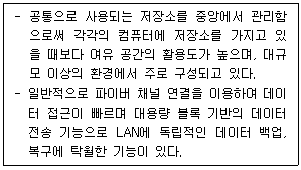
- NAS(Network Attached Storage)
- SAN(Storage Area Network)
- RAID(Redundant Array of Inexpensive Disks)
- SSD(Solid State Drive)
(정답률: 59%)
41. 서버 담당자 Park 사원은 Windows Server 2016에서 기존의 폴더 또는 파일을 안전한 장소로 보관하기 위해 백업 기능을 사용하고자 한다. Windows Server 2016은 자체적으로 백업 기능을 제공해주기 때문에 별도의 외부 소프트웨어를 설치하지 않아도 백업 기능을 사용할 수 있다. 다음 중 Windows Server 백업을 실행하는 방법으로 올바르지 않은 것은?
- [시작] - [실행] - wbadmin.msc 명령을 실행
- [제어판] - [시스템 및 보안] - [관리도구] - [Windows Server 백업]
- [컴퓨터 관리] - [저장소] - [Windows Server 백업]
- [시작] - [실행] - diskpart 명령을 실행
(정답률: 68%)
42. 서버 담당자 Park 사원은 Active Directory를 구성하여 다음과 같은 설정을 하고자 한다. 도메인을 두 개 이상 포함 하는 대부분의 조직에서 사용자가 다른 도메인에 있는 공유 리소스에 액세스할 수 있어야 하며, 이 액세스를 제어 하려면 한 도메인의 사용자를 인증하고 다른 도메인의 리소스를 사용할 수 있는 권한을 부여 해야 한다. 서로 다른 도메인의 클라이언트와 서버 간에 인증 및 권한 부여 기능을 제공 하기 위해 두 도메인 간에 설정해야 하는 것은?
- 도메인
- 트리
- 포리스트
- 트러스트
(정답률: 67%)
43. 서버 담당자 Park 사원은 Windows Server 2016에서 공인 CA에서 새로운 인증서를 요청하기 위해 실행중인 IIS를 사용해 CSR(Certificate Signing Request)를 생성하고자 한다. 이때 작업을 위해 담당자가 선택해야 하는 애플릿 항목은?
- HTTP 응답 헤더
- MIME 형식
- 기본 문서
- 서버 인증서
(정답률: 73%)
44. bind 패키지를 이용하여 네임서버를 구축할 경우 ′/var/named/icqa.or.kr.zone′ 의 내용이다. 설정의 설명으로 옳지 않은 것은?
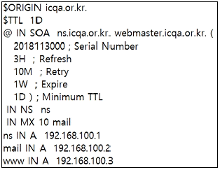
- ZONE 파일의 영역명은 ′icqa.or.kr′ 이다.
- 관리자의 E-Mail 주소는 ′webmaster.icqa.or.kr′ 이다.
- 메일 서버는 10번째 우선순위를 가지며 값이 높을수록 우선순위가 높다.
- ′www′ 의 FQDN은 ′www.icqa.or.kr′ 이다.
(정답률: 72%)
45. 다음과 같이 파일의 원래 권한은 유지한 채로 모든 사용자들에게 쓰기 가능한 권한을 추가부여할 때, 결과가 다른 명령어는 무엇인가?(오류 신고가 접수된 문제입니다. 반드시 정답과 해설을 확인하시기 바랍니다.)
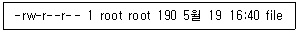
- chmod 666 file
- chmod a+w file
- chmod ugo+w file
- chmod go=w file
(정답률: 58%)
4과목: 네트워크 운용기기
46. RAID의 구성에서 미러링모드 구성이라고도 하며 디스크에 있는 모든 데이터는 동시에 다른 디스크에도 백업되어 하나의 디스크가 손상되어도 다른 디스크의 데이터를 사용할 수 있게 한 RAID 구성은?
- RAID 0
- RAID 1
- RAID 2
- RAID 3
(정답률: 76%)
47. 리피터(Repeater)를 사용해야 될 경우로 올바른 것은?
- 네트워크 트래픽이 많을 때
- 세그먼트에서 사용되는 액세스 방법들이 다를 때
- 데이터 필터링이 필요할 때
- 신호를 재생하여 전달되는 거리를 증가시킬 필요가 있을 때
(정답률: 86%)
48. 한 대의 스위치에서 네트워크를 나누어 마치 여러 대의 스위치처럼 사용할 수 있게 하고, 하나의 포트에 여러 개의 네트워크 정보를 전송할 수 있게 해주는 기능은?
- 스패닝 트리 프로토콜
- 가상 랜(Virtual LAN)
- TFTP 프로토콜
- 가상 사설망(VPN)
(정답률: 72%)
49. 다음 설명의 (A)에 들어갈 알맞은 용어는 무엇인가?
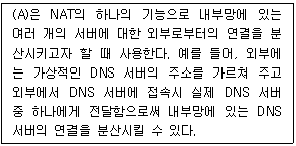
- IP Masquerading
- Port Forwarding
- Dynamic Address Allocation
- Load Balancing
(정답률: 62%)
50. 라우터에서 ′show running-config′ 란 명령어로 내용을 확인할 수 있는 것은?
- ROM
- RAM
- NVRAM
- FLASH
(정답률: 79%)